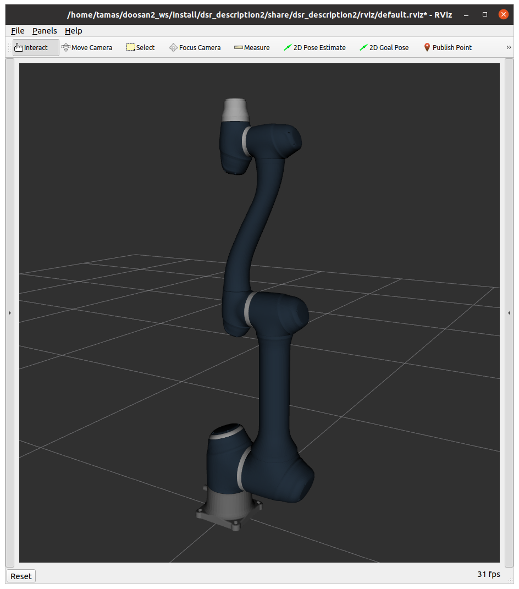

07. Kinematika, inverz kienamtika, Szimulált robotkar programozása csukló-, és munkatérben
Ismétlés
3D transzformációk
- Pozíció: 3 elemű offszet vektor

-
Orientáció: 3 x 3 rotációs matrix
- további orientáció reprezentációk: Euler-szögek, RPY, angle axis, quaternion
-
Helyzet (pose): 4 × 4 transzformációs mártrix
- Koordináta rendszer (frame): null pont, 3 tengely, 3 bázis vektor, jobbkéz-szabály
- Homogén transzformációk: rotáció és transzláció együtt
- pl. \(\mathbf{R}\) rotáció és \(\mathbf{v}\) transzláció esetén:
- Homogén koordináták:
- Vektor: 0-val egészítjük ki, \(\mathbf{a_H}=\left[\matrix{\mathbf{a} \\ 0}\right]=\left[\matrix{a_x \\ a_y \\ a_z \\ 0}\right]\)
- Pont: 1-gyel egészítjük ki, \(\mathbf{p_H}=\left[\matrix{\mathbf{p} \\ 1}\right]=\left[\matrix{p_x \\ p_y \\ p_z \\ 1}\right]\)
- Transzformációk alkalmazása egyszerűbb:
- Szabadsági fok (DoF): egymástól független mennyiségek száma.
Robotikai alapok

- Robotok felépítése: szegmensek (segment, link) és csuklók (joints)
- Munkatér (task space, cartesian space):
- Háromdimenziós tér, ahol a feladat, trajektóriák, akadályok, stb. definiálásra kerülnek.
- TCP (Tool Center Point): az end effektorhoz rögzített koordináta rendszer (frame)
- Base/world frame
- Csuklótér (joint space):
- A robot csuklóihoz rendelt mennyiségek, melyeket a robot alacsony szintű irányító rendszere értelmezni képes.
- csukló koordináták, sebességek, gyorsulások, nyomatékok...
Elmélet
Kinematika, inverz kinematika
Kinematika
Def. Kinematika
A TCP (vagy bármi más) helyzetének kiszámítása a csukló koordinátákból.
- Kinematikai modell
- Denavit--Hartenberg (HD) konvenció
- URDF (Unified Robotics Description Format, XML-alapú)
Ha a segmensekhez rendelt koordináta rendszerek rendre \(base, 1, 2, 3, ..., TCP\), a szomszédos \(i\) and \(i+1\) szegmensek közötti transzfomrációk \(T_{i+1,i}(q_{i+1})\) (mely a közbezárt csukló szögének függvénye), a transzfomráció a base frame és a TCP között felírható (\(n\) csuklós robotra):
Inverz kinematika
Def. Inverz kinematika
Csukló koordináták kiszámítása a (kívánt) TCP (vagy bármi más) pose eléréséhez.
Differenciális inverz kinematika
Def. Differenciális inverz kinematika
A csukló koordináták mely változtatása éri el a kívánt, kis mértékű változást a TCP helyzetében (rotáció és transzláció).
-
Jacobi-mátrix (Jacobian): egy vektorértékű függvény elsőrendű parciális deriváltjait tartalmazó mátrix.
\[ \mathbf{J} = \left[\matrix{\frac{\partial x_1}{\partial q_1} & \frac{\partial x_1}{\partial q_2} &\frac{\partial x_1}{\partial q_3} & \dots &\frac{\partial x_1}{\partial q_n} \\ \frac{\partial x_2}{\partial q_1} & \frac{\partial x_2}{\partial q_2} &\frac{\partial x_2} {\partial q_3} & \dots &\frac{\partial x_2}{\partial q_n} \\ \frac{\partial x_3}{\partial q_1} & \frac{\partial x_3}{\partial q_2} &\frac{\partial x_3}{\partial q_3} & \dots &\frac{\partial x_3}{\partial q_n} \\ \vdots &\vdots &\vdots &\ddots &\vdots \\ \frac{\partial x_m}{\partial q_1} & \frac{\partial x_m}{\partial q_2} &\frac{\partial x_m}{\partial q_3} & \dots &\frac{\partial x_m}{\partial q_n} \\}\right] \] -
Jacobi-mátrix jelentősége robotikában: megadja az összefüggést a csuklósebességek és a TCP sebessége között.
\[ \left[\matrix{\mathbf{v} \\ \mathbf{\omega}}\right] =\mathbf{J}(\mathbf{q})\cdot \mathbf{\dot{q}} \]
Inverz kinematika Jacobi inverz felhasználásával
- Számítsuk ki a kívánt és az aktuális pozíció különbségét: \(\Delta\mathbf{r} = \mathbf{r}_{desired} - \mathbf{r}_0\)
- Számítsuk ki a rotációk különbségét: \(\Delta\mathbf{R} = \mathbf{R}_{desired}\mathbf{R}_{0}^{T}\), majd konvertáljuk át axis angle reprezentációba \((\mathbf{t},\phi)\)
- Számítsuk ki \(\Delta\mathbf{ q}=\mathbf{J}^{-1}(\mathbf{q_0})\cdot \left[\matrix{k_1 \cdot \Delta\mathbf{r} \\ k_2 \cdot \phi \cdot \mathbf{t}}\right]\), ahol az inverz lehet pszeudo-inverz, vagy transzponált
- \(\mathbf{q}_{better} = \mathbf{q}_{0} + \Delta\mathbf{q}\)
Gyakorlat
1: Doosan2 install
-
Állítsuk vissza a
~/.bashrcfájlt ROS2 alapértelmezettre. -
Telepítsük a dependency-ket.

sudo apt update sudo apt-get install libpoco-dev sudo apt-get install ros-foxy-control-msgs ros-foxy-realtime-tools ros-foxy-xacro ros-foxy-joint-state-publisher-gui pip3 install kinpyTip
A
kinpycsomag forrását is töltsük le, hasznos lehet az API megértése szempontjából: https://pypi.org/project/kinpy/
-
Clone-ozzuk és build-eljük a repo-t.
mkdir -p ~/doosan2_ws/src cd ~/doosan2_ws/src git clone https://github.com/TamasDNagy/doosan-robot2.git git clone https://github.com/ros-controls/ros2_control.git git clone https://github.com/ros-controls/ros2_controllers.git git clone https://github.com/ros-simulation/gazebo_ros2_control.git cd ros2_control && git reset --hard 3dc62e28e3bc8cf636275825526c11d13b554bb6 && cd .. cd ros2_controllers && git reset --hard 83c494f460f1c8675f4fdd6fb8707b87e81cb197 && cd .. cd gazebo_ros2_control && git reset --hard 3dfe04d412d5be4540752e9c1165ccf25d7c51fb && cd .. git clone -b ros2 --single-branch https://github.com/ros-planning/moveit_msgs cd ~/doosan2_ws rosdep update rosdep install --from-paths src --ignore-src --rosdistro foxy -r -y colcon build --cmake-args -DCMAKE_EXPORT_COMPILE_COMMANDS=ON . install/setup.bash rosdep updateWarning
A VM-eken már telepítve van, de itt is frissítsük a repo-t:
cd ~/doosan2_ws/src/doosan-robot2 git pull cd ~/doosan2_ws colcon build --cmake-args -DCMAKE_EXPORT_COMPILE_COMMANDS=ONAdjuk hozzá az alábbi sort a
~/.bashrcfájlhoz:source ~/doosan2_ws/install/setup.bash
-
Teszteljük a szimulátort, új teminál ablakban:
ros2 launch dsr_launcher2 single_robot_rviz_topic.launch.py model:=a0912 color:=blue
2: Robot mozgatása csuklótérben
-
Hozzunk létre új python forrásfájlt
doosan2_controller.pynévvel a~/ros2_ws/src/ros2_course/ros2_coursemappában. Adjuk meg az új entry point-ot asetup.py-ban a megszokott módon. Iratkozzunk fel a robot csuklószögeit (konfigurációját) publikáló topicra. Hozzunk létre publisher-t a csuklók szögeinek beállítására használható topic-hoz./joint_states /joint_cmd
-
Mozgassuk a robotot
q = [0.24, -0.3, 1.55, 0.03, 1.8, 0.5]konfigurációba.
3. Kinematika
-
Importáljuk a
kinpycsomagot és olvassuk be a robotot leíró urdf fájlt:import kinpy as kp self.chain = kp.build_serial_chain_from_urdf(open( "/home/<USERNAME>/doosan2_ws/src/doosan-robot2/dsr_description2/urdf/a0912.blue.urdf").read(), "link6") print(self.chain.get_joint_parameter_names()) print(self.chain)
-
Számítsuk ki, majd irassuk ki a TCP pozícióját az adott konfigurációban a
kinpycsomag segítségével.tg = chain.forward_kinematics(th1)
4: Inverz kinematika Jacobi inverz módszerrel
Írjunk metódust, amely az előadásban bemutatott Jakobi inverz módszerrel valósítja meg az inverz kinematikai feladatot a roboton.
Az orientációt hagyjuk figyelmen kívül. Mozgassuk a TCP-t a (0.55, 0.05, 0.45) pozícióba. Ábrázoljuk a TCP
trajektóriáját Matplotlib segítségével.
-
Írjunk egy ciklust, melynek megállási feltétele a
delta_rmegfelelő nagysága ésrclpy.ok().
-
Számítsuk ki a kívánt és a pillanatnyi TCP pozíciók különbségét (
delta_r). Skálázzukk_1konstanssal.
-
phi_dot_tlegyen[0.0, 0.0, 0.0](ignoráljuk az orientációt).
-
Konkatenáljuk
delta_résphi_dot_t-t.
-
Számítsuk ki a Jacobi mátrixot az adott konfigurációban a
kp.jacobian.calc_jacobian(...)függvény segítségével.
-
Számítsuk ki Jacobi mátrix pszeudo-inverzét
np.linalg.pinv(...).
-
A fenti képlet segítségével számítsük ki
delta_q-t.
-
Növeljük a csuklószögeket a kapott értékekkel.
Bónusz: Inverz kinematika orientációval
Egészítsük ki az előző feladat megoldását úgy, hogy az orientációt is figyelembe vesszük az inverz kinematikai számítás során.